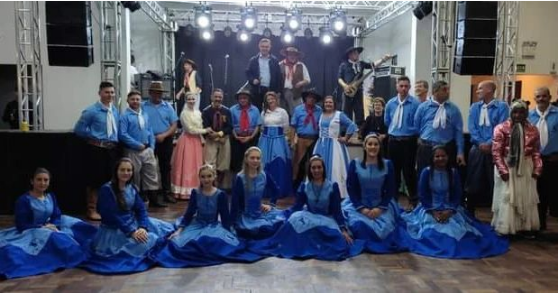

As aulas tradicionais de danças folclóricas gaúchas propriciam aos praticantes o conhecimento e preservação dessa cultura, além de incentivar a prática de atividades físicas e o lazer.
As modalidades do curso tornam os participantes aptos a dançar bailes em qualquer região do país e usar a tradicional pilcha, traje típico dos peões e prendas.
Em nossas aulas você vai aprender os seguintes ritmos:
- Vaneira
- Chote
- Rancheira
- Valsa
- Milonga
- Chamamé
- Bugio
Venha participar com a gente e se divertir!
Traga toda sua família!
Aulas todos os domingos às 18 hrs.
